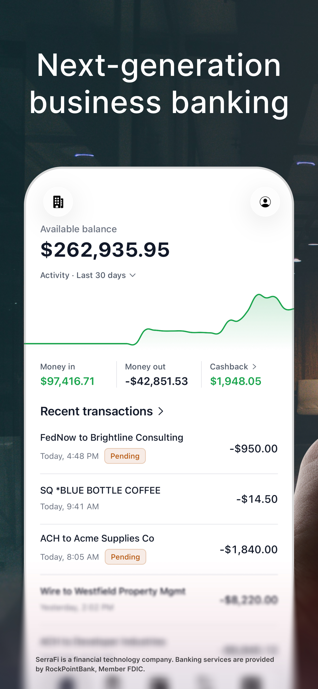
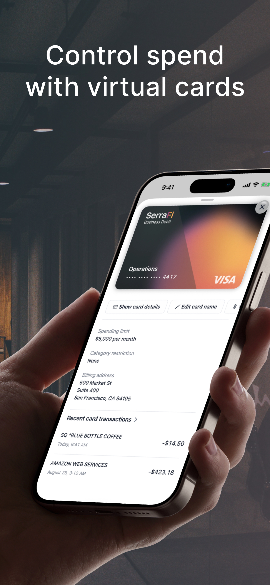
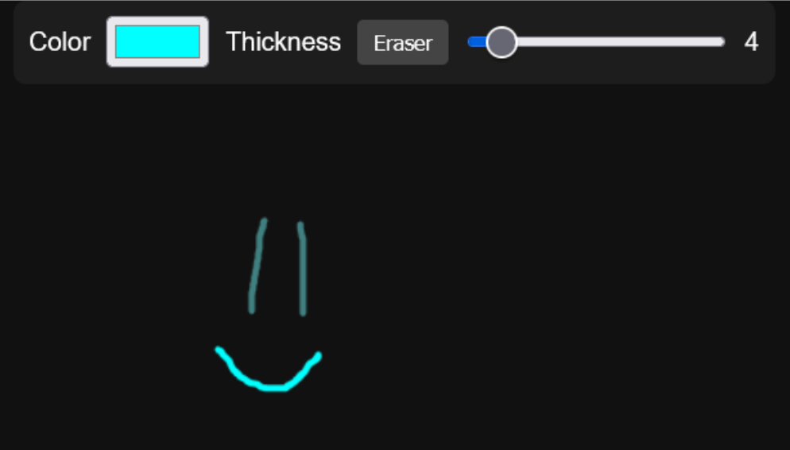

Portfolio


Mobile Banking App
Technology Skills: TypeScript, React Native, Swift, Cmux, Apple Developer, Xcode, Claude Code, AWS Services, DynamoDB
I worked on this project throughout my internship with SerraFi in a focus on Apple mobile development.
- Designed and developed a cross-platform banking app in React Native with native Swift components.
- Iterated through design and security to ensure app safety to protect sensitive financial data and refined UI/UX.

Multi-User Drawing App
Technology Skills: JavaScript, WebSockets, Computer Networks
- Follows computer network process and design.
- Initializes event listeners for html, connection, and message listeners.
- Renders current page & starts up render loop constantly waiting to rerender.
- Creates new libwebsocket context using port and draw-protocol established with frontend.
- Loops through context, listening for open, receive, or close messages.